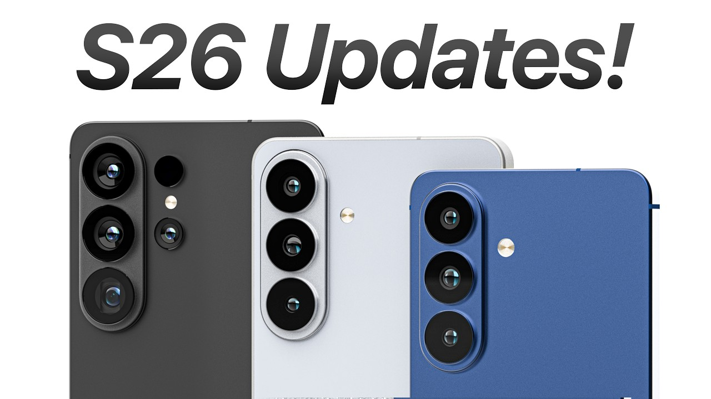

SamSung Galaxy S26 is going to be the next feneration of the samsung galaxy phones some rumorus say is should come out in january 2026. Early rumours sugggest there wont be a S26+. Instead well get a vanilla S26 flagship S26 ultra and a super skinny S26 edge
The Google Pixel 10A an affordable pixel phone is surely on the ards in the next few months. With google having launched a new A series each year since 2019. Early rumours suggest it wont be all that different from the old one though. A crtification listing fom us network provider verizon suggests a 6.28 amoled screen and a 48MP and 13MP rear camera duo.
The google pixel 11. Google’s mainline Pixel models tend to land in August, well ahead of Apple’s usual September time slot. That’s expected to stay the same in 2026, with the Pixel 11 series. A regular Pixel 11, two flavours of Pixel 11 Pro, and a Pixel 11 Pro Fold are all expected
It’s a given September 2026 will see new iPhones introduced. The iPhone 17 Pro and Pro Max are surely going to look very similar to the current generation seeing as Apple tends to stick with its designs for several years and the iPhone 17 generation only just debuted the full width camera plateau.

Website produced by Kenzie Vaughan: